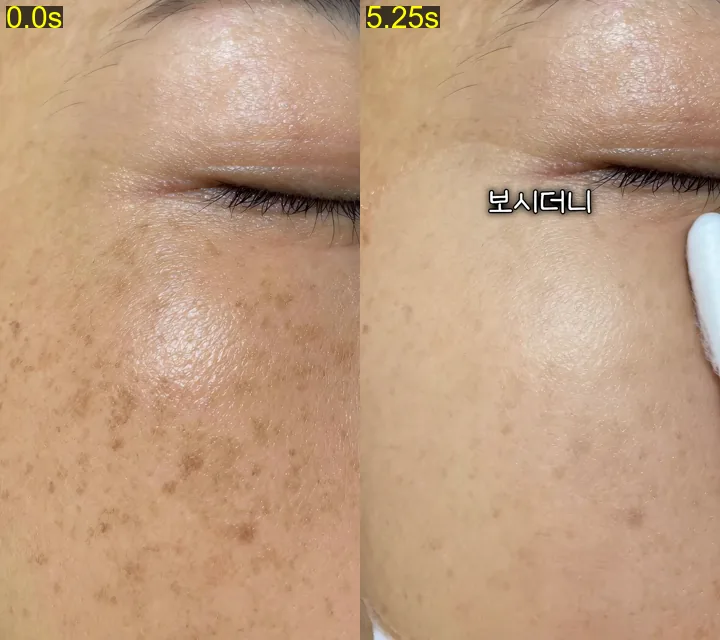
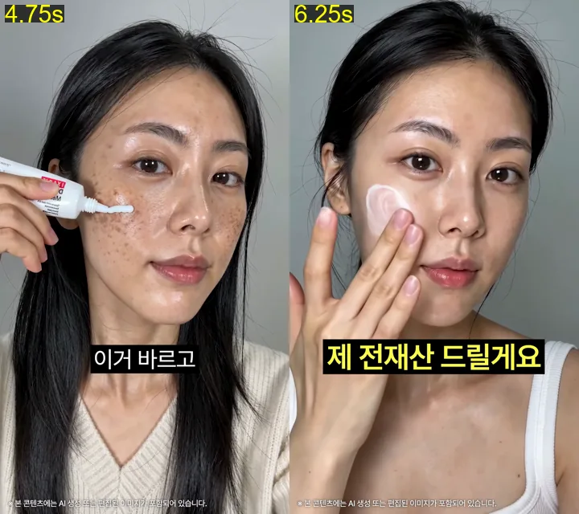
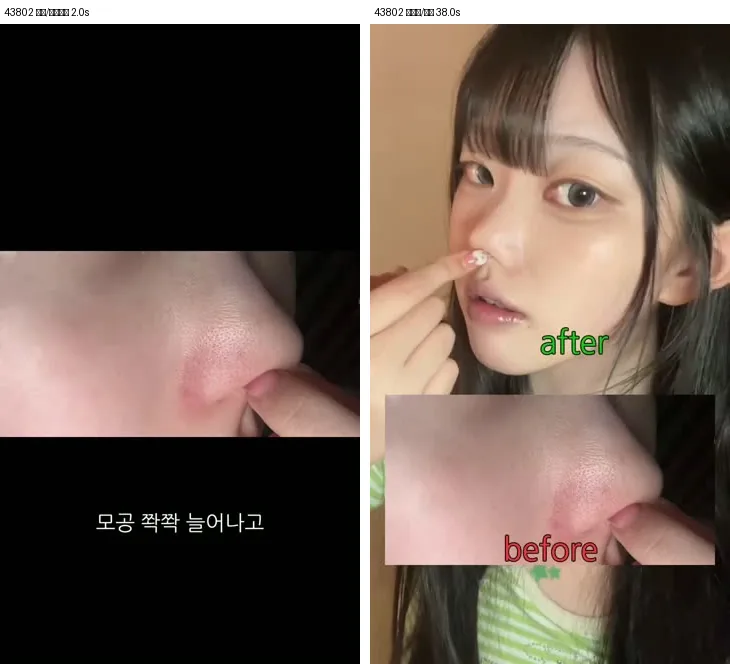
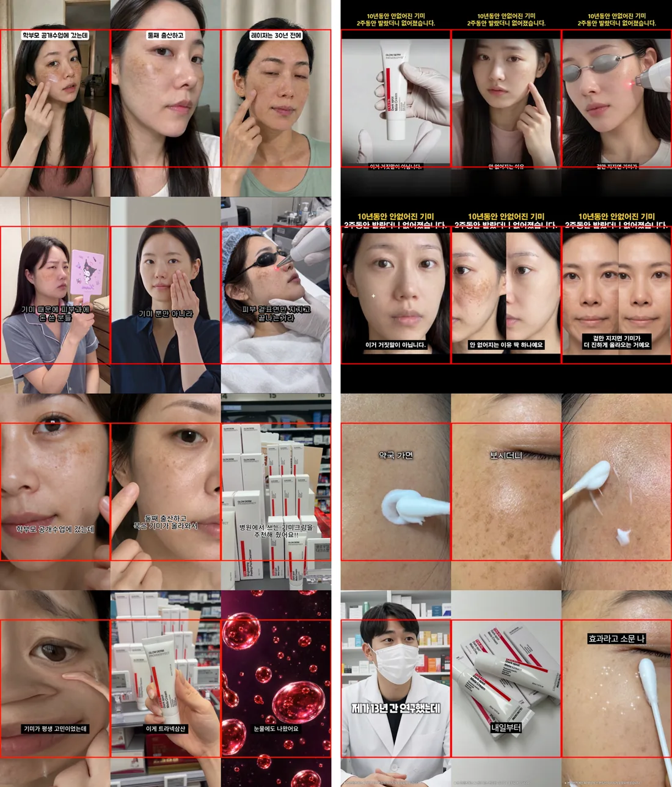

시나리오05 · 유라님 제작
구매 반응 관찰 중
- 지출
- ₩25,737
- 구매
- 0건
- ROAS
- 0.0%
- CPA
- 미확보
- 노출
- 301회
- 링크 클릭
- 4회
집행 상태를 확인하고, 다음 소재의 근거를 찾습니다.
2026-10-29 포함 누적 · 23:46 수집 시점 미완결
상태 확인 2026-10-29
2026-10-29 포함 누적 · 23:46 수집 시점. 아래 완결 누적과 합산하지 않습니다.
아래 값은 전일까지의 완결 누적입니다. 위의 오늘 포함 누적과 더하지 않습니다. 상태는 최신 확인 시점 기준입니다.
| 소재 · 영상 보기 | 지출 | 구매 | 매출 | ROAS | CPA | 링크 CPC | 3초 유지율 | 재생 표본 |
|---|---|---|---|---|---|---|---|---|
시나리오05 · 유라님 제작▶ 켜짐기준일·운영 기록2026-10-29 상태 확인 · 성과: 2026-10-28까지 · 수집: 2026-10-29 · 유지율: 미확보 | ₩0 | 0 | ₩0 | 미확보 | 미확보 | 미확보 | 미확보 | 전체 미확보 3초 미확보 |
바르는 레이저 · 유라님 제작▶ 켜짐기준일·운영 기록2026-10-29 상태 확인 · 성과: 2026-10-28까지 · 수집: 2026-10-29 · 유지율: 미확보 | ₩0 | 0 | ₩0 | 미확보 | 미확보 | 미확보 | 미확보 | 전체 미확보 3초 미확보 |
패드 소거형 · 시나리오18 v7▶ 켜짐기준일·운영 기록2026-10-29 상태 확인 · 성과: 2026-10-28까지 · 수집: 2026-10-29 · 유지율: 미확보 | ₩0 | 0 | ₩0 | 미확보 | 미확보 | 미확보 | 미확보 | 전체 미확보 3초 미확보 |
01 · 웹디 · 학부모 SunHi▶ 꺼짐기준일·운영 기록2026-10-29 상태 확인 · 성과: 2026-10-28까지 · 수집: 2026-10-29 · 유지율: 2026-10-28 | ₩36,744 | 0 | ₩0 | 0.0% | 미확보 | ₩3,674 | 33% | 전체 446 3초 152 |
02 · 웹디 · 시나리오 2▶ 꺼짐기준일·운영 기록2026-10-29 상태 확인 · 성과: 2026-10-28까지 · 수집: 2026-10-29 · 유지율: 2026-10-28 · 2026-10-19 중단: 10/8~18 광고비 38,550원, 구매 0건(ROAS 0%). 최근에도 지출이 이어졌으나 구매가 발생하지 않아 테스트를 종료. 사용자가 광고관리자에서 직접 OFF. | ₩40,108 | 0 | ₩0 | 0.0% | 미확보 | ₩3,085 | 25% | 전체 336 3초 84 |
03 · BX · 시나리오 1▶ 캠페인 중단기준일·운영 기록2026-10-29 상태 확인 · 성과: 2026-10-28까지 · 수집: 2026-10-29 · 유지율: 2026-10-28 | ₩52,393 | 1 | ₩44,900 | 85.7% | ₩52,393 | ₩1,807 | 30% | 전체 630 3초 196 |
04 · BX · BA 편집▶ 캠페인 중단기준일·운영 기록2026-10-29 상태 확인 · 성과: 2026-10-28까지 · 수집: 2026-10-29 · 유지율: 2026-10-28 | ₩10,622 | 0 | ₩0 | 0.0% | 미확보 | 미확보 | 28% | 전체 108 3초 31 |
05 · 피캄연습 5▶ 캠페인 중단기준일·운영 기록2026-10-29 상태 확인 · 성과: 2026-10-28까지 · 수집: 2026-10-29 · 유지율: 2026-10-28 | ₩463,345 | 9 | ₩374,100 | 80.7% | ₩51,483 | ₩3,174 | 20% | 전체 6,688 3초 1,388 |
A · 피캄연습 5 (피드용)▶ 캠페인 중단기준일·운영 기록2026-10-29 상태 확인 · 성과: 2026-10-28까지 · 수집: 2026-10-29 · 유지율: 2026-10-28 | ₩82,152 | 1 | ₩32,900 | 40.0% | ₩82,152 | ₩4,324 | 21% | 전체 929 3초 209 |
B · 시나리오 3 (유라)▶ 캠페인 중단기준일·운영 기록2026-10-29 상태 확인 · 성과: 2026-10-28까지 · 수집: 2026-10-29 · 유지율: 2026-10-28 | ₩89,608 | 1 | ₩32,900 | 36.7% | ₩89,608 | ₩2,560 | 36% | 전체 770 3초 277 |
고소할게요 · 유라님 제작▶ 꺼짐기준일·운영 기록2026-10-29 상태 확인 · 성과: 2026-10-28까지 · 수집: 2026-10-29 · 유지율: 2026-10-28 | ₩43,712 | 0 | ₩0 | 0.0% | 미확보 | ₩2,732 | 29% | 전체 367 3초 108 |
메디옥실 원인제거형▶ 꺼짐기준일·운영 기록2026-10-29 상태 확인 · 성과: 2026-10-28까지 · 수집: 2026-10-29 · 유지율: 2026-10-28 | ₩36,123 | 0 | ₩0 | 0.0% | 미확보 | ₩2,007 | 26% | 전체 460 3초 115 |
바르는 레이저▶ 꺼짐기준일·운영 기록2026-10-29 상태 확인 · 성과: 2026-10-28까지 · 수집: 2026-10-29 · 유지율: 2026-10-28 | ₩45,173 | 0 | ₩0 | 0.0% | 미확보 | ₩2,823 | 32% | 전체 458 3초 180 |
가격반전 훅▶ 꺼짐기준일·운영 기록2026-10-29 상태 확인 · 성과: 2026-10-28까지 · 수집: 2026-10-29 · 유지율: 2026-10-28 | ₩30,839 | 0 | ₩0 | 0.0% | 미확보 | ₩5,140 | 25% | 전체 271 3초 73 |
혜택 3종▶ 꺼짐기준일·운영 기록2026-10-29 상태 확인 · 성과: 2026-10-28까지 · 수집: 2026-10-29 · 유지율: 2026-10-28 | ₩30,366 | 0 | ₩0 | 0.0% | 미확보 | ₩4,338 | 31% | 전체 215 3초 72 |
마법조선 · 필재▶ 꺼짐기준일·운영 기록2026-10-29 상태 확인 · 성과: 2026-10-28까지 · 수집: 2026-10-29 · 유지율: 2026-10-28 | ₩46,389 | 0 | ₩0 | 0.0% | 미확보 | ₩1,450 | 49% | 전체 449 3초 220 |
기미크림 개발 이야기▶ 꺼짐기준일·운영 기록2026-10-29 상태 확인 · 성과: 2026-10-28까지 · 수집: 2026-10-29 · 유지율: 2026-10-28 | ₩45,621 | 0 | ₩0 | 0.0% | 미확보 | ₩4,147 | 19% | 전체 529 3초 102 |
고소하세요 · 연수님 제작▶ 꺼짐기준일·운영 기록2026-10-29 상태 확인 · 성과: 2026-10-28까지 · 수집: 2026-10-29 · 유지율: 2026-10-28 | ₩28,217 | 0 | ₩0 | 0.0% | 미확보 | ₩5,643 | 25% | 전체 302 3초 95 |
조건에 맞는 소재가 없습니다. 검색어나 상태를 바꿔주세요.
링크 CPC = 같은 기간 지출 ÷ 링크 클릭. CPA = 지출 ÷ 구매. ROAS = 메타 구매 전환값 ÷ 지출. 클릭·구매·지출이 0인 분모의 지표는 미확보입니다. 전체 CPC는 합계로 계산하며 광고별 CPC의 단순평균이 아닙니다. 3초 유지율은 진단 지표이며 구매 효율을 대신하지 않습니다. 소재별 유지율 기간·재생 표본은 운영 기록과 표본 열에서 확인하세요.
제작 가설과 관찰을 함께 기록합니다. 구매 효율은 구매·CPA·ROAS, 이탈 원인은 유지율·클릭으로 확인합니다.
성과 수집: 2026-10-29T23:46:27+09:00 · 당일 포함 누적 · 링크 클릭 기준
주간 기록: 매주 수요일 · 다음 갱신 예정 2026-11-04
출산 후 기미 고민을 다룬 인터뷰가 구매 공감으로 이어지는지 확인해요.
10/28 신규 3편 CBO
광고 상태: 집행 중
| 지출 | 노출 | 클릭 | 구매 |
|---|---|---|---|
| 25,737원 | 301회 | 4회 | 0건 |
도포·전후 비교를 담은 유라 제작본의 구매 반응을 확인해요.
10/28 신규 3편 CBO
광고 상태: 집행 중
| 지출 | 노출 | 클릭 | 구매 |
|---|---|---|---|
| 2,571원 | 23회 | 2회 | 0건 |
기미 소거 시연과 성분·혜택 연결이 구매로 이어지는지 확인해요.
10/28 신규 3편 CBO
광고 상태: 집행 중
| 지출 | 노출 | 클릭 | 구매 |
|---|---|---|---|
| 0원 | 0회 | 0회 | 0건 |
강한 첫 문장이 구매까지 이어지는지 확인해요.
광고 상태: 중단
| 지출 | 노출 | 클릭 | 구매 |
|---|---|---|---|
| 43,712원 | 391회 | 16회 | 0건 |
짧은 원인 설명이 구매를 설득하는지 확인해요.
광고 상태: 중단
| 지출 | 노출 | 클릭 | 구매 |
|---|---|---|---|
| 36,123원 | 495회 | 18회 | 0건 |
전후 비교와 도포 시연이 구매로 이어지는지 확인해요.
광고 상태: 중단
| 지출 | 노출 | 클릭 | 구매 |
|---|---|---|---|
| 45,173원 | 495회 | 16회 | 0건 |
토닝 대신 크림이라는 가치 비교를 테스트해요.
광고 상태: 중단
| 지출 | 노출 | 클릭 | 구매 |
|---|---|---|---|
| 30,839원 | 294회 | 6회 | 0건 |
세 가지 구매 이유를 한눈에 전달해요.
광고 상태: 중단
| 지출 | 노출 | 클릭 | 구매 |
|---|---|---|---|
| 30,366원 | 232회 | 7회 | 0건 |
기미가 반복되는 이유를 설명해 제품 신뢰를 높여요.
광고 상태: 중단
| 지출 | 노출 | 클릭 | 구매 |
|---|---|---|---|
| 46,389원 | 467회 | 32회 | 0건 |
제품을 만든 이유가 구매 설득에 도움이 되는지 봐요.
광고 상태: 중단
| 지출 | 노출 | 클릭 | 구매 |
|---|---|---|---|
| 45,621원 | 545회 | 11회 | 0건 |
같은 고소 훅의 다른 제작본을 비교해요.
광고 상태: 중단
| 지출 | 노출 | 클릭 | 구매 |
|---|---|---|---|
| 30,036원 | 338회 | 5회 | 0건 |
2026-10-29T23:46:27+09:00 수집 · 해당 시점의 미완결 값입니다. 전일까지의 누적·일별 그래프에 추가 합산하지 않습니다.
2026-09-13 ~ 2026-10-29 수집 시점 · 구매 기여가 반영되며 이전 집계와 달라질 수 있습니다.
| 소재 | 지출 | 노출 | 링크 클릭 | 구매 | 매출 | ROAS | 링크 CPC |
|---|---|---|---|---|---|---|---|
| 시나리오05 · 유라님 제작 | ₩25,737 | 301 | 4 | 0 | ₩0 | 0.0% | ₩6,434 |
| 바르는 레이저 · 유라님 제작 | ₩2,571 | 23 | 2 | 0 | ₩0 | 0.0% | ₩1,286 |
| 패드 소거형 · 시나리오18 v7 | ₩0 | 0 | 0 | 0 | ₩0 | 미확보 | 미확보 |
| 소재 | 지출 | 노출 | 링크 클릭 | 구매 | 매출 | ROAS | 링크 CPC |
|---|---|---|---|---|---|---|---|
| 고소하세요 · 연수님 제작 | ₩1,819 | 10 | 0 | 0 | ₩0 | 0.0% | 미확보 |
| 시나리오05 · 유라님 제작 | ₩25,737 | 301 | 4 | 0 | ₩0 | 0.0% | ₩6,434 |
| 바르는 레이저 · 유라님 제작 | ₩2,571 | 23 | 2 | 0 | ₩0 | 0.0% | ₩1,286 |
| 패드 소거형 · 시나리오18 v7 | ₩0 | 0 | 0 | 0 | ₩0 | 미확보 | 미확보 |
우리 소재 유지율 2026-10-28까지 · 실제 수집 2026-10-29
기본 화면은 현재 집행 중인 소재입니다. 종료 소재는 ‘종료 소재 포함’에서 다시 볼 수 있고, ‘우리 광고세트만 보기’에서 과거 세트(10/6 CBO·10/12 A/B 등)를 세트 단위로 비교할 수 있습니다. 우리 소재의 곡선·게재 상태는 매일 갱신합니다.
① 바로 위에서 A·B 선택 → ② ‘두 소재만 보기’ 체크 → ③ 급락하는 초를 찾고 장면 비교로 확인. 두 소재 모드에서는 평균선도 숨깁니다. 선 클릭은 영상을 처음부터 엽니다.
선택한 소재의 유지율이 수집되면 이곳에 표시됩니다. 과거 광고세트를 선택해 이전 소재를 비교할 수 있습니다.
우리: 색상 실선 · 과거 위닝: 초록 점선 · 실패: 반투명 회색 실선 + × · 기타 비교 소재: 파란 점선 · 평균: 빨간 점선. 기타 비교 소재는 위닝·실패로 분류하지 않은 CCFM 소재입니다. 평균은 과거 위닝 소재만의 단순 평균이며 재생 수로 가중하지 않았습니다.
유지율은 구매 효율과 별도로 읽습니다. 위닝 평균은 역사적 레퍼런스 비교선이며 구매 성공을 보장하는 기준선이 아닙니다. 콜라쥬영상화의 7→8초 상승과 9~10초 누락은 원자료 재확인이 필요합니다.
최근 집행 여부로 나눈 그룹이 아닙니다. 기존 수집값에 위닝·실패 표시가 없는 행이 이 그룹에 들어갑니다. 첫 장면·이탈 패턴을 비교하는 용도이며, 유지율이나 누적 ROAS만으로 성공·실패를 자동 판정하지 않습니다.
우리·CCFM 위닝·실패에서 두 소재를 골라 같은 초의 장면을 비교합니다. 프레임 추출은 0~5초, 가까운 첫 프레임 기준. 모바일은 좌우로 밀어서 보고, 이미지를 눌러 확대하세요.
현재 유지율 배열에서 가장 큰 하락 구간을 계산했습니다. 장면 설명은 기존 판독 기록으로 시점 오차 ±1초입니다.
분류는 과거 레퍼런스·실패 집행 사례의 구분입니다. 현재 누적 ROAS 순위와 다릅니다. 같은 영상도 집행 구간·재세팅에 따라 결과가 달라집니다.
| 구분 | 소재 · 영상 보기 | 지출 | 구매 | CPA (계산) | 누적 ROAS | 후크 비율 | 지속 비율 | 재생 표본 |
|---|---|---|---|---|---|---|---|---|
| CCFM 과거 위닝 | ABO 성과 (젊은 남성 첫 장면)▶기간·판정·출처과거 성과를 보고 선정한 레퍼런스 · 당시 보고 223% (8/14~17). 광고별 확정 판정 기간·목표선은 미확보입니다. 누적: 2026-06-01~2026-10-11 (누적) · CCFM_정은_글로우덤2 메타 인사이트 패널 과거 운영 근거 읽기 ↗ · 수집값 보기 ↗ | ₩4,145,011 | 미확보 | 미확보 | 141.0% | 54% | 4.95% | 전체 60,518 3초 30,961 |
| CCFM 과거 위닝 | 외국인 극찬▶기간·판정·출처과거 성과를 보고 선정한 레퍼런스 · 당시 보고 189~261% (8/20~21). 광고별 확정 판정 기간·목표선은 미확보입니다. 누적: 2026-06-01~2026-10-11 (누적) · CCFM_정은_글로우덤2 메타 인사이트 패널 과거 운영 근거 읽기 ↗ · 수집값 보기 ↗ | ₩705,886 | 미확보 | 미확보 | 140.0% | 60% | 2.51% | 전체 10,238 3초 6,110 |
| CCFM 과거 위닝 | 어머님▶기간·판정·출처과거 성과를 보고 선정한 레퍼런스. 광고별 확정 판정 기간·목표선은 미확보입니다. 누적: 2026-06-01~2026-10-11 (누적) · CCFM_정은_글로우덤2 메타 인사이트 패널 동일 광고명 6806_01(지출 12.9M, ROAS 1.59)도 존재. 일 최고 212%는 누적과 다름 과거 운영 근거 읽기 ↗ · 수집값 보기 ↗ | ₩17,176,185 | 미확보 | 미확보 | 156.0% | 44% | 12.47% | 전체 483,392 3초 212,846 |
| CCFM 과거 위닝 | 판매종료 (전문가후킹)▶기간·판정·출처과거 성과를 보고 선정한 레퍼런스. 광고별 확정 판정 기간·목표선은 미확보입니다. 누적: 2026-06-01~2026-10-11 (누적) · CCFM_정은_글로우덤2 메타 인사이트 패널 과거 운영 근거 읽기 ↗ · 수집값 보기 ↗ | ₩3,977,554 | 미확보 | 미확보 | 153.0% | 60% | 8.05% | 전체 43,406 3초 25,012 |
| CCFM 실패 집행 | 경고 첫 장면 변경 (OFF)▶기간·판정·출처수집 당시 실패 비교군으로 분류 · 당시 보고 117% (9/1). 광고별 확정 판정 기간·목표선은 미확보입니다. 누적: 2026-06-01~2026-10-11 (누적) · CCFM_정은_글로우덤2 메타 인사이트 패널 과거 운영 근거 읽기 ↗ · 수집값 보기 ↗ | ₩1,295,583 | 미확보 | 미확보 | 119.0% | 39% | 4.96% | 전체 24,542 3초 9,526 |
| CCFM 실패 집행 | 어머님 9/5 재세팅▶기간·판정·출처수집 당시 실패 비교군으로 분류. 광고별 확정 판정 기간·목표선은 미확보입니다. 누적: 2026-06-01~2026-10-11 (최대) · CCFM_정은_글로우덤2 메타 인사이트 패널 과거 운영 근거 읽기 ↗ · 수집값 보기 ↗ | ₩523,591 | 미확보 | 미확보 | 98.0% | 34% | 10.98% | 전체 미확보 3초 미확보 |
| CCFM 실패 집행 | 관리받는구도 8/25▶기간·판정·출처수집 당시 실패 비교군으로 분류. 광고별 확정 판정 기간·목표선은 미확보입니다. 누적: 2026-06-01~2026-10-11 (최대) · CCFM_정은_글로우덤2 메타 인사이트 패널 과거 운영 근거 읽기 ↗ · 수집값 보기 ↗ | ₩1,099,708 | 미확보 | 미확보 | 127.0% | 55% | 7.77% | 전체 미확보 3초 미확보 |
| CCFM 실패 집행 | 종이 9/4▶기간·판정·출처수집 당시 실패 비교군으로 분류. 광고별 확정 판정 기간·목표선은 미확보입니다. 누적: 2026-06-01~2026-10-11 (최대) · CCFM_정은_글로우덤2 메타 인사이트 패널 과거 운영 근거 읽기 ↗ · 수집값 보기 ↗ | ₩728,772 | 미확보 | 미확보 | 96.0% | 40% | 7.47% | 전체 미확보 3초 미확보 |
| CCFM 실패 집행 | 커뮤니티 8/12▶기간·판정·출처수집 당시 실패 비교군으로 분류. 광고별 확정 판정 기간·목표선은 미확보입니다. 누적: 2026-06-01~2026-10-11 (최대) · CCFM_정은_글로우덤2 메타 인사이트 패널 과거 운영 근거 읽기 ↗ · 수집값 보기 ↗ | ₩246,610 | 미확보 | 미확보 | 145.0% | 74% | 56.5% | 전체 미확보 3초 미확보 |
| CCFM 실패 집행 | 카피배리(화장) 8/27▶기간·판정·출처수집 당시 실패 비교군으로 분류. 광고별 확정 판정 기간·목표선은 미확보입니다. 누적: 2026-06-01~2026-10-11 (최대) · CCFM_정은_글로우덤2 메타 인사이트 패널 과거 운영 근거 읽기 ↗ · 수집값 보기 ↗ | ₩175,788 | 미확보 | 미확보 | 87.0% | 32% | 11.41% | 전체 미확보 3초 미확보 |
| CCFM 실패 집행 | 어머님베리(언니) 9/11▶기간·판정·출처수집 당시 실패 비교군으로 분류. 광고별 확정 판정 기간·목표선은 미확보입니다. 누적: 2026-06-01~2026-10-11 (최대) · CCFM_정은_글로우덤2 메타 인사이트 패널 과거 운영 근거 읽기 ↗ · 수집값 보기 ↗ | ₩233,273 | 미확보 | 미확보 | 88.0% | 28% | 15.34% | 전체 미확보 3초 미확보 |
| CCFM 실패 집행 | 콜라쥬영상화(2) 9/10▶기간·판정·출처수집 당시 실패 비교군으로 분류. 광고별 확정 판정 기간·목표선은 미확보입니다. 누적: 2026-06-01~2026-10-11 (최대) · CCFM_정은_글로우덤2 메타 인사이트 패널 과거 운영 근거 읽기 ↗ · 수집값 보기 ↗ | ₩185,623 | 미확보 | 미확보 | 48.0% | 53% | 34.17% | 전체 미확보 3초 미확보 |
| CCFM 기타 비교 소재 | ABO 파란인물▶기간·판정·출처추가 참고 소재 · 당시 보고 298% (9/21). 광고별 확정 판정 기간·목표선은 미확보입니다. 누적: 2026-06-01~2026-10-11 (누적) · CCFM_정은_글로우덤2 메타 인사이트 패널 2계정에서 발견(1계정 아님), 집행 초기 표본 과거 운영 근거 읽기 ↗ · 수집값 보기 ↗ | ₩112,235 | 미확보 | 미확보 | 84.0% | 45% | 7.53% | 전체 2,007 3초 899 |
| CCFM 기타 비교 소재 | 3D 피부단면▶기간·판정·출처추가 참고 소재 · 당시 보고 129% (7/16~19). 광고별 확정 판정 기간·목표선은 미확보입니다. 누적: 2026-06-01~2026-10-11 (누적) · CCFM_정은_글로우덤 (1계정) 계산 · 분모 다름 (3초/노출, 15초/3초) p25가 3초재생보다 큼 -> 25% 지표 정의 상이/표본 작음, 해석 주의 과거 운영 근거 읽기 ↗ · 수집값 보기 ↗ | ₩200,752 | 미확보 | 미확보 | 89.0% | 18.2% | 37.6% | 전체 미확보 3초 396 |
| CCFM 기타 비교 소재 | 판매종료 (전문가후킹, 9/4)▶기간·판정·출처추가 참고 소재. 광고별 확정 판정 기간·목표선은 미확보입니다. 누적: 2026-06-01~2026-10-11 (누적) · CCFM 글로우덤2(광고명 _fb_) 메타 인사이트 패널 1계정 아닌 2계정 act에서 조회됨. 현재 OFF 과거 운영 근거 읽기 ↗ · 수집값 보기 ↗ | ₩1,891,219 | 미확보 | 미확보 | 150.0% | 49% | 5.76% | 전체 28,313 3초 13,545 |
| 우리 광고 | 01 · 웹디 · 학부모 SunHi▶성과: 2026-10-28까지 · 수집: 2026-10-29 · 유지율: 2026-10-28 · OFF수집값 ↗ | ₩36,744 | 0 | 미확보 | 0.0% | 33% | 미확보 | 전체 446 3초 152 |
| 우리 광고 | 02 · 웹디 · 시나리오 2▶성과: 2026-10-28까지 · 수집: 2026-10-29 · 유지율: 2026-10-28 · OFF수집값 ↗ | ₩40,108 | 0 | 미확보 | 0.0% | 25% | 미확보 | 전체 336 3초 84 |
| 우리 광고 | 03 · BX · 시나리오 1▶성과: 2026-10-28까지 · 수집: 2026-10-29 · 유지율: 2026-10-28 · CAMPAIGN_PAUSED수집값 ↗ | ₩52,393 | 1 | ₩52,393 | 85.7% | 30% | 미확보 | 전체 630 3초 196 |
| 우리 광고 | 04 · BX · BA 편집▶성과: 2026-10-28까지 · 수집: 2026-10-29 · 유지율: 2026-10-28 · CAMPAIGN_PAUSED수집값 ↗ | ₩10,622 | 0 | 미확보 | 0.0% | 28% | 미확보 | 전체 108 3초 31 |
| 우리 광고 | 05 · 피캄연습 5▶성과: 2026-10-28까지 · 수집: 2026-10-29 · 유지율: 2026-10-28 · CAMPAIGN_PAUSED수집값 ↗ | ₩463,345 | 9 | ₩51,483 | 80.7% | 20% | 미확보 | 전체 6,688 3초 1,388 |
| 우리 광고 | A · 피캄연습 5 (피드용)▶성과: 2026-10-28까지 · 수집: 2026-10-29 · 유지율: 2026-10-28 · CAMPAIGN_PAUSED수집값 ↗ | ₩82,152 | 1 | ₩82,152 | 40.0% | 21% | 미확보 | 전체 929 3초 209 |
| 우리 광고 | B · 시나리오 3 (유라)▶성과: 2026-10-28까지 · 수집: 2026-10-29 · 유지율: 2026-10-28 · CAMPAIGN_PAUSED수집값 ↗ | ₩89,608 | 1 | ₩89,608 | 36.7% | 36% | 미확보 | 전체 770 3초 277 |
| 우리 광고 | 고소할게요 · 유라님 제작▶성과: 2026-10-28까지 · 수집: 2026-10-29 · 유지율: 2026-10-28 · OFF수집값 ↗ | ₩43,712 | 0 | 미확보 | 0.0% | 29% | 미확보 | 전체 367 3초 108 |
| 우리 광고 | 메디옥실 원인제거형▶성과: 2026-10-28까지 · 수집: 2026-10-29 · 유지율: 2026-10-28 · OFF수집값 ↗ | ₩36,123 | 0 | 미확보 | 0.0% | 26% | 미확보 | 전체 460 3초 115 |
| 우리 광고 | 바르는 레이저▶성과: 2026-10-28까지 · 수집: 2026-10-29 · 유지율: 2026-10-28 · OFF수집값 ↗ | ₩45,173 | 0 | 미확보 | 0.0% | 32% | 미확보 | 전체 458 3초 180 |
| 우리 광고 | 가격반전 훅▶성과: 2026-10-28까지 · 수집: 2026-10-29 · 유지율: 2026-10-28 · OFF수집값 ↗ | ₩30,839 | 0 | 미확보 | 0.0% | 25% | 미확보 | 전체 271 3초 73 |
| 우리 광고 | 혜택 3종▶성과: 2026-10-28까지 · 수집: 2026-10-29 · 유지율: 2026-10-28 · OFF수집값 ↗ | ₩30,366 | 0 | 미확보 | 0.0% | 31% | 미확보 | 전체 215 3초 72 |
| 우리 광고 | 마법조선 · 필재▶성과: 2026-10-28까지 · 수집: 2026-10-29 · 유지율: 2026-10-28 · OFF수집값 ↗ | ₩46,389 | 0 | 미확보 | 0.0% | 49% | 미확보 | 전체 449 3초 220 |
| 우리 광고 | 기미크림 개발 이야기▶성과: 2026-10-28까지 · 수집: 2026-10-29 · 유지율: 2026-10-28 · OFF수집값 ↗ | ₩45,621 | 0 | 미확보 | 0.0% | 19% | 미확보 | 전체 529 3초 102 |
| 우리 광고 | 고소하세요 · 연수님 제작▶성과: 2026-10-28까지 · 수집: 2026-10-29 · 유지율: 2026-10-28 · OFF수집값 ↗ | ₩28,217 | 0 | 미확보 | 0.0% | 25% | 미확보 | 전체 302 3초 95 |
| 우리 광고 | 시나리오05 · 유라님 제작▶성과: 2026-10-28까지 · 수집: 2026-10-29 · 유지율: 미확보 · ON수집값 ↗ | ₩0 | 0 | 미확보 | 미확보 | 미확보 | 미확보 | 전체 미확보 3초 미확보 |
| 우리 광고 | 바르는 레이저 · 유라님 제작▶성과: 2026-10-28까지 · 수집: 2026-10-29 · 유지율: 미확보 · ON수집값 ↗ | ₩0 | 0 | 미확보 | 미확보 | 미확보 | 미확보 | 전체 미확보 3초 미확보 |
| 우리 광고 | 패드 소거형 · 시나리오18 v7▶성과: 2026-10-28까지 · 수집: 2026-10-29 · 유지율: 미확보 · ON수집값 ↗ | ₩0 | 0 | 미확보 | 미확보 | 미확보 | 미확보 | 전체 미확보 3초 미확보 |
조건에 맞는 소재가 없습니다. 검색어나 분류를 바꿔주세요.
CCFM 구매 수·CPA는 미확보입니다. 패널 후크/지속 비율을 우선 표시하며, 3D 피부단면은 분모가 다른 계산 지표입니다. 해당 행의 ‘기간·판정·출처’에서 구분합니다. 전체 재생 수를 확보한 소재만 표본 수를 표시했습니다.
광고별 구매·CPA·ROAS를 확인하고, 유지율은 이탈 구간을 찾는 데 사용합니다. CBO의 소재별 지출은 동일하지 않으므로 노출이 적은 소재의 우열을 먼저 확정하지 않습니다.
중단 기준: 광고별 누적 지출 30,000원 초과·구매 0건. 손익분기 ROAS·목표 CPA는 비용 근거가 확보된 뒤 설정합니다.
피캄연습 5와 시나리오 3 중 어느 영상 버전이 구매 효율을 더 잘 재현하는가?
상단 문구는 동일. 인물·첫 장면·편집·길이는 다릅니다. 문구 유무나 첫 장면 하나의 효과를 분리하는 실험은 아닙니다.
구매 수·CPA·ROAS를 우선 보고, 3초 유지율은 진단에 사용. 예산·최소 표본·관찰기간의 수치 기준은 실행 전 확정이 필요합니다.
당시 두 영상의 구매 효율을 비교한 실험입니다. 현재 운영 지시가 아니며, 소표본 결과를 새 소재의 성과로 일반화하지 않습니다.
집계 범위와 조회 시점이 다릅니다. 두 누적값의 비교이며 차액을 특정 날짜의 실적으로 해석하지 않습니다. 이전 매출은 당시 반올림 ROAS로 계산, 최신 매출은 구매 전환값 열입니다.
| 지표 | 10/12 오전 수집 · 10/11 완결 | 2026-10-28까지 |
|---|---|---|
| 지출 | ₩230,706 | ₩1,081,412 |
| 구매 | 4 | 12 |
| 매출 | ₩170,457 | ₩484,800 |
| ROAS (계산) | 73.9% | 44.8% |
| CPA (계산) | ₩57,676 | ₩90,118 |
일별: Meta Marketing API · 2026-10-28까지 · 일별 원본 · 합계 ₩1,081,412. 누적 ₩1,081,412와 ₩0 차이(계산)가 있습니다. 조회 시점·기여 반영 차이를 임의로 맞추지 않습니다.
| 광고 | 노출 | 링크클릭 | 랜딩조회 | 구매 | CTR | CPC | CPM |
|---|---|---|---|---|---|---|---|
| 01 · 웹디 · 학부모 SunHi | 463 | 10 | 9 | 0 | 2.15983% | ₩3,674 | ₩79,361 |
| 02 · 웹디 · 시나리오 2 | 360 | 13 | 11 | 0 | 3.61111% | ₩3,085 | ₩111,411 |
| 03 · BX · 시나리오 1 | 676 | 29 | 24 | 1 | 4.28994% | ₩1,807 | ₩77,504 |
| 04 · BX · BA 편집 | 113 | 0 | 0 | 0 | — | — | ₩94,000 |
| 05 · 피캄연습 5 | 7,080 | 146 | 119 | 9 | 2.06215% | ₩3,174 | ₩65,444 |
| A · 피캄연습 5 (피드용) | 972 | 19 | 17 | 1 | 1.95473% | ₩4,324 | ₩84,519 |
| B · 시나리오 3 (유라) | 809 | 35 | 30 | 1 | 4.32633% | ₩2,560 | ₩110,764 |
| 고소할게요 · 유라님 제작 | 391 | 16 | 11 | 0 | 4.09207% | ₩2,732 | ₩111,795 |
| 메디옥실 원인제거형 | 495 | 18 | 15 | 0 | 3.63636% | ₩2,007 | ₩72,976 |
| 바르는 레이저 | 495 | 16 | 13 | 0 | 3.23232% | ₩2,823 | ₩91,259 |
| 가격반전 훅 | 294 | 6 | 6 | 0 | 2.04082% | ₩5,140 | ₩104,895 |
| 혜택 3종 | 232 | 7 | 6 | 0 | 3.01724% | ₩4,338 | ₩130,888 |
| 마법조선 · 필재 | 467 | 32 | 25 | 0 | 6.85225% | ₩1,450 | ₩99,334 |
| 기미크림 개발 이야기 | 545 | 11 | 8 | 0 | 2.01835% | ₩4,147 | ₩83,708 |
| 고소하세요 · 연수님 제작 | 328 | 5 | 5 | 0 | 1.52439% | ₩5,643 | ₩86,027 |
| 시나리오05 · 유라님 제작 | 0 | 0 | 0 | 0 | — | — | — |
| 바르는 레이저 · 유라님 제작 | 0 | 0 | 0 | 0 | — | — | — |
| 패드 소거형 · 시나리오18 v7 | 0 | 0 | 0 | 0 | — | — | — |
| 합계 (계산) | 13,720 | 363 | 299 | 12 | 2.65% | ₩2,979 | ₩78,820 |
랜딩→구매 참고 비율: 4.0% (구매 12 / 랜딩 299, 계산). 메타 기여 기간과 랜딩 집계의 차이가 있어 확정 전환율로 해석하지 않습니다.
당시 표본과 순위에 대한 연구 기록입니다. 현재 광고의 누적 ROAS와 구분해 읽습니다. 전체 판독 근거 ↗
| 구분 | 표본 | 애프터 첫 등장 (중앙값) | 3초 안 B&A | 명확도 상/중/하 |
|---|---|---|---|---|
| CCFM 효율 1~7위 | 13편 (B&A 12) | 5.5초 (4~9초) | 0/12 | 5 / 7 / 0 |
| CCFM 효율 8~11위 | 14편 (B&A 6) | 8.5초 | 2/6 | 1 / 4 / 1 |
| CCFM 순위 밖 B&A 영상 | 42편 (B&A 40) | 2.0초 | 30/40 | 18 / 21 / 1 |
| ACIS 화장품 (피부 개선형) | 17편 (B&A 15) | 27초 (11~39초) | 0/17 (전체 표본) | 6 / 3 / 6 |
CCFM 위닝 B&A는 대부분 같은 부위 도포→닦아냄 연속 컷(어머님 5초, 할인종료 4초, 판매종료 6초). 좌우·상하 분할은 관리받는구도·종이 2건뿐. 0~3초 분할 정지사진형은 순위 밖에 몰려 있다.
ACIS도 15편이 5초 안에 피부 고민 클로즈업으로 시작하고, before/after 비교는 11~39초에 나온다.
우리 적용: 0초 기미 접사 → 1~4초 도포·닦기 → 4~6초 같은 부위·같은 구도 애프터.



한계: CCFM 1~7위 13편은 실질 소스 6개의 변형. 순위 밖은 B&A 코드가 붙은 영상만 골라 편향이 있어 인과 판단 불가. ACIS 풀 상위 60편 중 59편은 영상 링크 만료(404)로 보관본 17편만 봤고(집행 최대 47일), 40초 이후는 미판독. 순위·ROAS 근거는 ccfm_efficiency.md. 원자료: research/비포애프터_타이밍_20261012/.
설정 당시 기록이며 현재 설정을 재조회한 결과는 아닙니다.
| 구분 | 이름 | ID |
|---|---|---|
| 캠페인 | 콘텐츠기획_기미크림_CBO_261012_시나리오3테스트 | 120253118515260127 |
| 광고세트 | 1012_CBO_여성3559_크림_S3테스트 | 120253118515290127 |
| 광고 A | 콘텐츠기획_피캄연습5_v8_vim_fb_261012_05 영상: 피캄연습5 피드 안 잘리는 버전 43.95초 · utm_content=vim_fb_261012_05 | 120253118515240127 |
| 광고 B | 웹디_시나리오3_수정본_vim_fb_261012_06 영상: 웹디 시나리오3(유라) 피드 안 잘리는 버전 39.36초 · utm_content=vim_fb_261012_06 | 120253118625590127 |
| 원본과 다른 점 | 이름, 영상(피드 4:5에서 상단 문구 안 잘리게 수정), utm_content, 시작일 |
|---|---|
| 원본과 같음 (전수 점검) | 목표, 입찰, 픽셀·구매 이벤트, 기여(클릭 7일·조회 1일·참여 1일), 타기팅(KR 여성 35~59 한국어), 노출위치, 브랜드 안전 "확장", 아이덴티티 뷰티개꿀팁, 문구·CTA |
| 꺼둔 것 | 제품 둘러보기·슬라이드쇼 (복제 시 메타가 자동으로 켜서 끔) |
| 업로드 화질 | 10MB 업로드 한도 때문에 2패스 재인코딩. 원본 대비 SSIM 05 = 0.9949, 시나리오3 = 0.9954 (체감 차이 없음) |

값 표시: 실측은 보유 수집값, 계산은 합산·나눗셈, 추정은 수집 메모상 미확정 값입니다. 미확보를 0으로 채우지 않습니다. ROAS는 전 구간 % 단위입니다.
기여 설정: Meta API · click 7d / view 1d / engaged view 1d · impression time. Own video retention refreshed through period_end; CCFM comparison curves retain their historical periods.